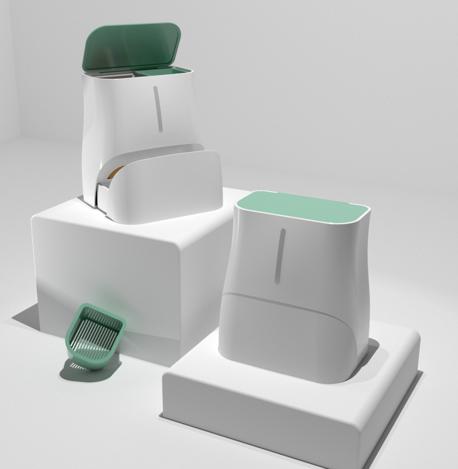
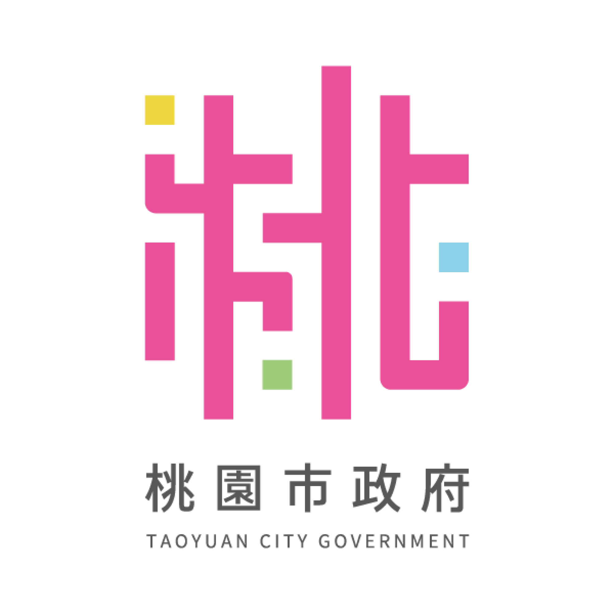

Our Mission
議題背景

產品介紹
biotech
研究成果
深度解析椰殼纖維對不同油脂飽和度的吸收數據與環境降解報告。

循環經濟
我們追求的並非單純的過濾，而是將廢棄油脂轉化為生態循環中的養分。

「讓廢油，在流入水管前停下來」
Stop grease before it enters the drain.
Product Design
Silver Winner - Recognizing excellence in sustainable home appliances and innovative industrial design approach for environmental protection.
2026 Silver Winner
Academic Research
潛力研究獎 - 針對地方性水環境議題提出具備商業轉化與社會影響力之創新廢油解決方案，獲得高度學術肯定。
2025 潛力研究獎台灣家庭每年產出的廚餘廢油估算總量
僅 1cc 的廢油即可造成 180 公升的水域汙染
全台因油脂造成水管阻塞之申報修繕次數
我們融合了永續材料與智慧科技，將複雜的環保行為轉化為直覺的居家日常。
採用高效吸油的椰殼纖維作為濾芯基礎，天然有機且具備極佳的疏水親油特性。
內建高精度感測器，透過光學折射判斷濾材飽和度，即時以柔和燈號提醒更換。
使用過的濾材可直接進入堆肥系統，實現從廚房到土壤的零浪費閉環設計。
深度解析椰殼纖維對不同油脂飽和度的吸收數據與環境降解報告。
我們追求的並非單純的過濾，而是將廢棄油脂轉化為生態循環中的養分。